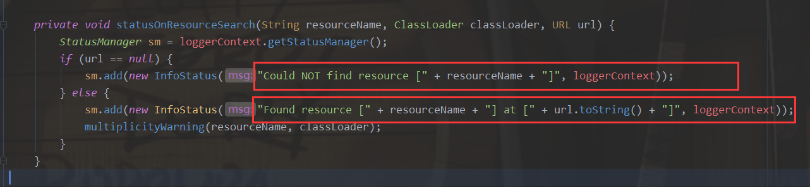
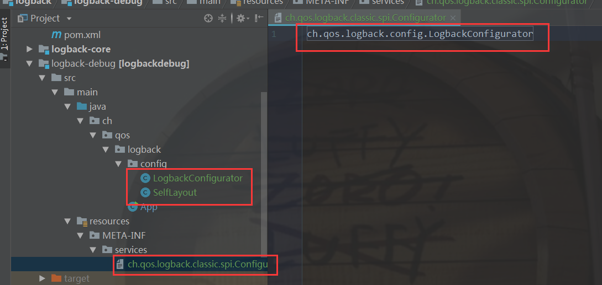
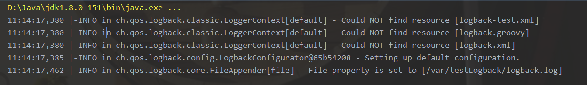
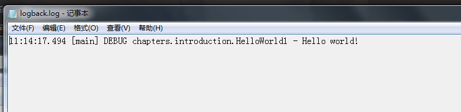

在大概了解了日志的加载和打印过程过后，我们尝试一下自己配置日志
小修改
先根据文档将主函数改成如下的样子：
1 | public static void main( String[] args ) |
其作用是打印出logback的内部启动日志，也就是我们之前读源码看到的那些错误描述代码；
这些描述语句只是进入的记录，如果我们不开启打印，就看不见

.java配置
三种配置方式： xml 、 groovy和java文件均可以配置logback，之前看的源码是使用的BasicConfigurator类，巩固性的自己写一个类似的。
我们新建一个配置类来配置logback，根据logback的解析思路，会使用ServiceLoader类去解析classpath下的“service”文件夹；而所有的logback配置类都需要实现ch.qos.logback.classic.spi.Configurator类。
所以我们创建了一个如下：

按照BasicConfigurator类的写法来创建我们的LogbackConfigurator：
BasicConfigurator类用的是cosolerAppender，这次用一下fileAppedner试试；
1 | public class LogbackConfigurator extends ContextAwareBase implements Configurator { |
运行结果打印：

控制台并没有输出我们的“Hello world!”，而是在名为“logback.log”的日志文件里面：

除了 ConsoleAppedner、fileAppender还有各种不同输出方式的appender（ssl，smtp，db）；